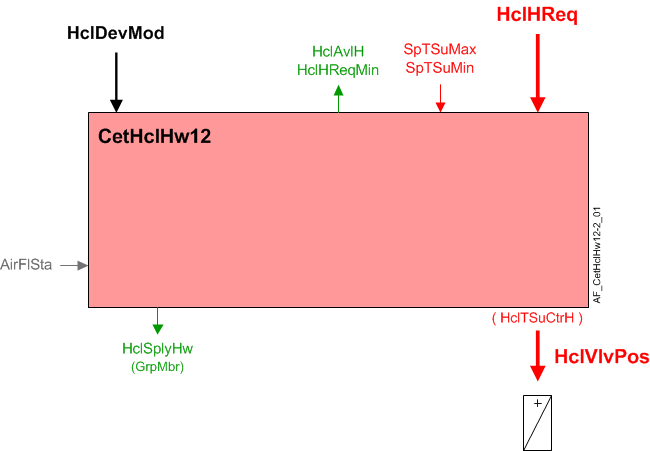
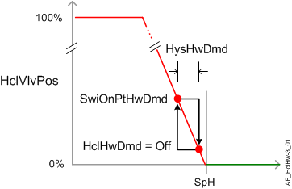

CET 热水加热盘管、热功率控制、送风温度控制 (CetHclHw12)
Overview
应用功能》CET room pressurization hot water heat.coil 12, with thermal power control, cascaded supply air temperature control" (CetHclHw12）操作加热盘管的热水阀。主输出是阀门位置的调制输出。
该 AF 拥有自己的 PID 控制器，用于级联送风温度控制和更快的响应。需要供气温度传感器。
主要特点：
- Hot water valve modulation
- Cascaded supply air temperature control
- Thermal power control with BTU compensation
- Heating available status
- Interlocks
- Supply chain interface
Function
下图显示了与此应用程序函数关联的 BACnet 对象。主要信号流程总结如下：
基本功能：接受来自相关房间控制器的请求信号并将其映射到适当的控制设定点；将设定值与送风温度传感器的当前值进行比较；在将结果作为命令输出到控制设备的对象之前，将结果传递给设备模式逻辑开关。
加热线圈加热要求（HclHReq）被接收并处理成加热线圈阀门位置的输出信号（HclVlvPos).

| 命令或请求（或相关） |
| 条件或状态或可用性的通知 |
| 设备模式 |
| 互锁（内部信号，不是 BACnet 对象；有关其他信息，请参阅互锁部分） |


Interlocks
房间自动化联锁是协调 HVAC 设备之间交互的内部信号。它们在 ABT 站点或 Web 界面中不可见，但与它们关联的参数可见。有关影响联锁功能的参数的提示，请参阅注释列。
信号 | 类型 | 方向 | 描述 | 评论 |
|---|---|---|---|---|
AirFlHReq | 布尔值 | 出去 | 气流加热要求 | 有关名为“...AirFlHReq”的参数，请参阅配置部分。 |
AirFlSta | 布尔值 | In | 气流状态 | 范围EnMonAirFlSta必须=是。有关其他信息，请参阅配置部分。 |
Sequence
Hot water valve modulation:为了响应加热需求，调节加热阀以将室温控制在设定值。为了响应特殊模式（例如预热、冷却或安全条件）的外部触发，加热阀可以设置为关闭或完全打开。
Cascaded supply air temperature control:供暖需求信号（HclHReq) 从室温 PID 映射到送风温度设定点值 (HclSpTSuH)，并用作位于此 AF 中的级联送风温度 PID 的输入。送风 PID 将设定点值与送风温度传感器的当前值进行比较，任何差异都用于增加或减少到命令对象的模拟输出信号。
如果送风温度传感器无效，则通过室温PID进行温度控制。
Device mode:设备模式的输入信号是多状态值。
HclDevMod支持以下状态：
- Off
- Control mode (modulation)
- Fully open
Heating available status:当加热线圈可供加热时，二进制输出信号为“Heating coil available for heating" (HclAvlH）将为“是”（可用）。HclAvlH系统使用它来调节加热资源。例如，如果有加热请求，但加热线圈不可用，因为它已经处于最大容量（因为设备模式完全打开），则HclAvlH将发出“否”信号，并且将激活温度控制序列中的下一个可用加热资源。
要使加热可用状态为“是”，设备模式必须等于“控制模式”（调制）。
Supply chain interface, HwDmd:热水需求的输出信号是多状态值。
HclHwDmd支持以下状态：
- Off (no demand signal)
- Heating demand (demand signal is active)
- Warm-up (Hot water demand is initiated when plant operating mode is set to warm-up)
下图说明了控制调制和相关功能。

Configuration
 Parameters
Parameters
描述 | 范围 | 默认值 |
|---|---|---|
Switch-on point for hot water demand | SwiOnPtHwDmd | 4 [%] |
Hysteresis for hot water demand | HysHwDmd | 2 [%] |
Switch-on point for air volume flow heating request | SwiOnAirFlHReq | 4 [%] |
Hysteresis for air volume flow heating request | HysAirFlHReq | 2 [%] |
Switch-on delay for air volume flow heating request | DlyOnAirFlHReq | 30 [s] |
Enable monitoring for air volume flow state 0:No 1:Yes（REQUIRED 因为这可以启用送风温度级联控制回路）。 | EnMonAirFlSta | 1:Yes |
Maximum supply air temperature setpoint for heating | SpTSuHMax | 32 [°C] |
Minimum supply air temperature setpoint for heating | SpTSuHMin | 16 [°C] |
Temperature unit | TUnit | [°C] |
Interface
界面 | 描述 | 类型 | 参考号 | 拥有者 |
|---|---|---|---|---|
HclVlvPos | Heating coil valve position | AO | ◉ | Room segment / Device |
HclSpTSuH | Heating coil supply air temperature setpoint for heating | APrcVal | ● | - |
HclDevMod | Heating coil device mode 1:Off | MPrcVal | ● | - |
HclTSuCtrH | Supply air temperature controller heating for heating coil | 控制器 | ● | - |
HclHReq | Heating coil heating request | ACalcVal | ● | - |
HclHReqMin | Heating coil heating request minimum | ACalcVal | ● | - |
HclAvlH | Heating coil available for heating 0:No | BCalcVal | ● | - |
HclHwDmd | Heating coil hot water demand 1:Off | MCalcVal | ● | - |
HclSplyHw | Heating coil supply chain for hot water | GrpMbr | ● | Room segment |
Engineering and commissioning
范围EnMonAirFlSta (Enable monitoring for air volume flow state) 必须设置为 1：是。这是默认设置HclHw12(unlikeHclHw11其中此设置是可选的）。重要的是要了解此设置对于 NOT 是可选的HclHw12.